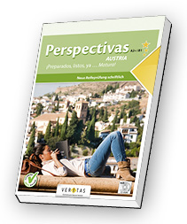

-
… in die Inhalte der CD-ROM und Informationen zur standardisierten kompetenzorientierten schriftlichen Reife- und Diplomprüfung (Spanisch)
-
… zusätzliche Aufgabenstellungen (Niveau A2) zu allen Kompetenzen, nach Themen geordnet (inkl. Audios und Lösungen)
-
… zusätzliche Aufgabenstellungen (Niveau B1) zu allen Kompetenzen, nach Themen geordnet (inkl. Audios, Lösungen und Wortschatzlisten)
-
… 2 Lesetexte (inkl. Lösungen)
|

|